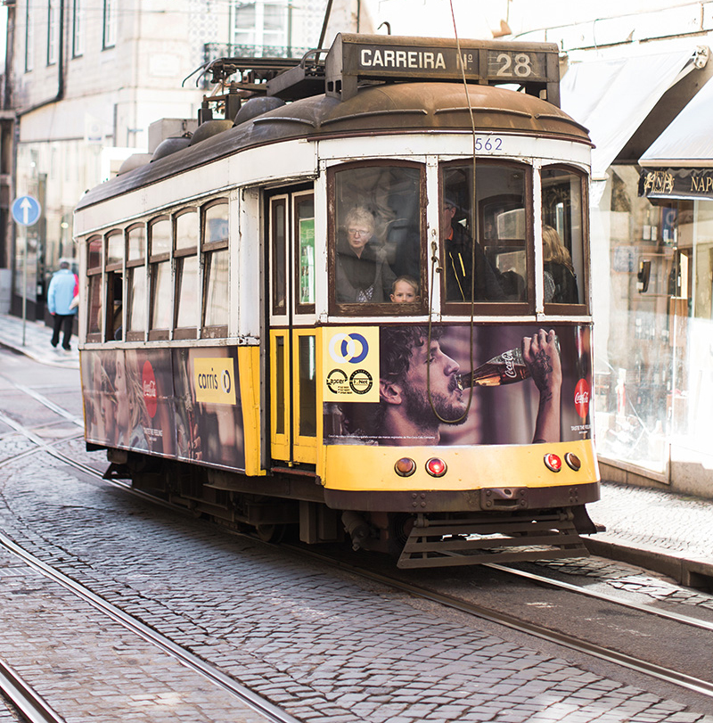
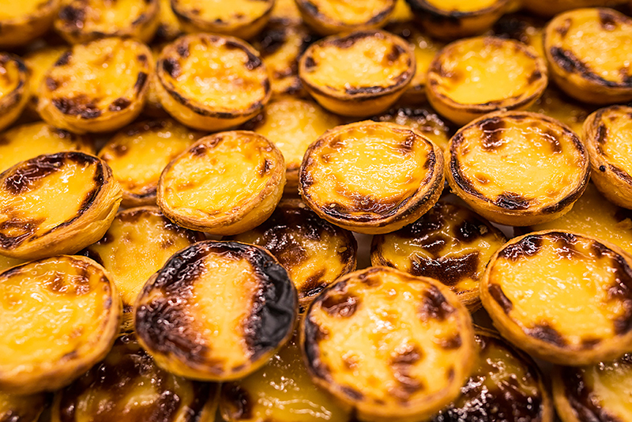
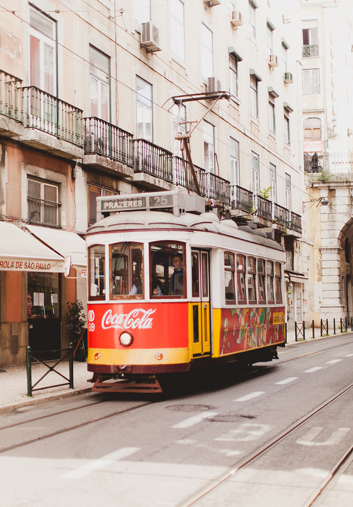
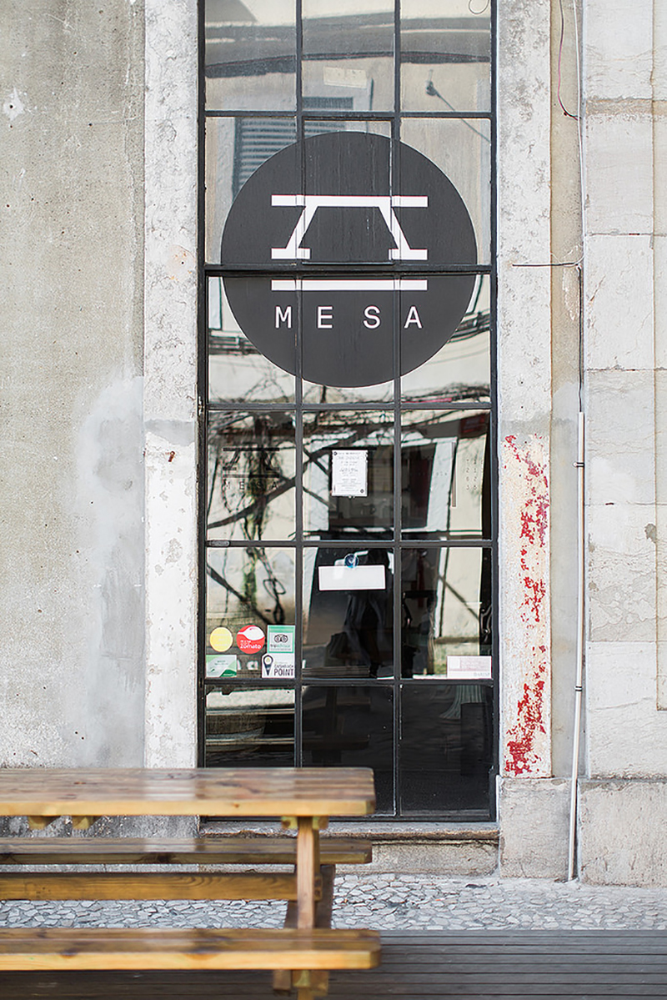

☞ BAIXA DISTRICT ☜
SEPTEMBER 22, 2016
You’ll often see Baixa and Chiado grouped together – they’re close enough to share a metro station, after all. The difference is that Baixa, which means ‘low’ is just that, a flat grid of streets at the base of Lisbon’s city centre. Read more
☞ TIME OUT MARKET ☜
SEPTEMBER 20, 2016
Av. 24 de Julho 49, 1200-109 Lisboa
TimeOut have brought together some of Lisbon’s best shops and foodie places
under one roof. You’ll find flowers, pastries, steak, burgers, cheese…all sorts!
Take a closer look at what you’ll find here.
Read more
☞ GENERAL TIPS ☜
SEPTEMBER 18, 2016
The Metro in Lisbon is super simple to understand, and isn’t a massive network. However, it’s easy enough to wander around the centre and see lots without using the trains, and the beautiful old trams will take you where you need to go. Read more
☞ A OUTRA FACE DA LUA ☜
SEPTEMBER 22, 2016

R. Assunção 22, 1100-044 Lisboa
I’ve been to this vintage shop a few times, and whilst I’ve not ever taken anything home with me, it’s always worth a snoop as it’s so close to the main shopping streets. It also has a cafe, so works well as a spot to do a little shopping as well as grabbing a coffee. Read more
☞ AMESA ☜
SEPTEMBER 23, 2016
Rua Rodrigues de Faria 103, 1300 Lisboa
Amesa, meaning the table, was where we settled on eating that first night. You’ll have to take note that restaurants here aren’t open all day, but for lunch and then again for dinner – and in typical Portuguese manner that’s usually post 7:30pm. So of course we were the first people to enter this Italian restaurant. Read more